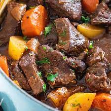

Let's make some STEW!

Ingredients
- Two pounds of chuck roast
- One bag of gold potatoes
- Two large carrots
- One yellow onion
- 6-8 cups of beef stock
- Two tablespoons of red wine vinegar
- One cup of red or white wine
- One small can of tomato paste
Seasonings
- Thyme
- Salt and Pepper to taste
- Rosemary
Directions
- Cut roast into 1.5 inch cubes
- Dice carrots and union
- Brown each side of the meat
- Remove meat and cook carrots and onion in remaining oil
- Once softened, add garlic and tomato paste. Cook for 1-2 more minutes.
- Pour in wine, deglaze pot, and reduce until half
- Add red wine vinegar and broth, bring to a low boil and add meat
- Cover and cook on low for 2-3 hour (the longer the better)
- 40 minutes prior to serving, add potatoes into the pot
- Add water as needed